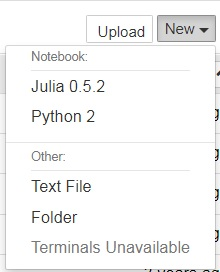

2017-06-15
黒木 玄
以下は6月15日の後半の作業。
前半とは別のWindows機にJuliaとAnaconda3を入れた。
2周目なので比較的短時間に手際よくインストールできた。
次のように環境変数を設定した。
JULIA_HOME=C:\Julia-0.5.2\bin JULIA_PKGDIR=C:\Julia-0.5.2\Pkg
おそらく JULIA_PKGDIR の指定が本質的である。これをサボると Jupyter Notebook で Julia のノートブックを作成したときに dead kernel の永久ループで苦しむ。
Julia 0.5.2 を C:\Julia-0.5.2 以下にインストール。
Anaconda 3.6 version を C:\Anaconda3 以下にインストール。
Julia を起動して以下を実行。
Pkg.init()
Pkg.add("IJulia")
ENV["PYTHON"]="C:\\Anaconda3\\python.exe"
Pkg.add("PyPlot")
using PyCall
PyCall.pyversion
最後に v"3.6.1" と表示された。Anaconda3 の python を使う設定になっている。
スタートメニューの Anaconda3 の Jupyter Notebook のショートカットをデスクトップに送ってコピーし、 プロパティを参照し、リンク先の最後の %USERPROFILE% を自分好みの初期フォルダに変更する。私は次のように変更した。
C:\Anaconda3\python.exe C:\Anaconda3\cwp.py C:\Anaconda3 "C:/Anaconda3/python.exe" "C:/Anaconda3/Scripts/jupyter-notebook-script.py" C:\home\kuroki\Dropbox\Jupyter
これでデスクトップ上の Jupyter Notebook のショートカットをダブルクリックすると、自分好みのフォルダを初期フォルダにして、Jupyter Notebook が起動し、ブラウザにその画面が現われる。
ブラウザのその画面で、New → Jupyter 0.5.2 を選択すると、Jupyter 0.5.2 の notebook を使用可能である。
Juliaを起動してさらに以下を実行して、使えるパッケージを増やした。
Pkg.add("ODE")
Pkg.add("SymPy")
Anacondaの方にScipyもインストールした。
$ C:\Anaconda3\Scripts\conda install scipy
以下は6月15日の前半の作業。
試行錯誤で手間取った様子の記録をすべて残しておく。
https://lectures.quantecon.org/jl/getting_started.html におおむね従って、古いWindows 7機にJuliaとAnacondaをインストール
ポイントはJuliaをインストールした直後に環境変数
JULIA_PKGDIR
を設定しておくことだと思われる。Juliaの環境変数に関しては
http://www.cas.cmc.osaka-u.ac.jp/~paoon/misc/julia/post/install/
を参考にした。
環境変数を適切に設定しておかないと、IJuliaをインストールしているにも関わらず、 それを発見できずにDead kernelになって、Jupyter NotebookからJuliaを使用できなくなるようだ。
あと、スタートメニューから起動できる Jupyter Notebook のショートカットの リンク先が正常に作成されていないので、手で修正することが必要である。
やはり、Windowsで色々やるのは大変であった。
試行錯誤の詳しい経緯は以下の通り。 上から下へ時系列順なので答えを先に知りたい人は下の方から読んだ方がよいかもしれない。
https://julialang.org/downloads/
から
Windows Self-Extracting Archive(Ver.0.5.2)
をダウンロードして
C:\Julia-0.5.2
以下にインストールした。
環境変数のPATHに
C:\Julia-0.5.2\bin
を追加した。(追加の仕方はググればわかるはず)
適当なコマンドラインからJuliaを実行。
私はCygwinのzshから実行したが、Windowsのコマンドプロンプトからの実行でもよいはず。
$ julia
_
_ _ _(_)_ | A fresh approach to technical computing
(_) | (_) (_) | Documentation: https://docs.julialang.org
_ _ _| |_ __ _ | Type "?help" for help.
| | | | | | |/ _` | |
| | |_| | | | (_| | | Version 0.5.2 (2017-05-06 16:34 UTC)
_/ |\__'_|_|_|\__'_| | Official http://julialang.org/ release
|__/ | x86_64-w64-mingw32
julia> x = 10
10
julia> 2x
20
julia>
julia> f(x::Int)=(x÷100)^2+(x%100)^2
f (generic function with 1 method)
julia> @time [(x,f(x)) for x=100:9999 if f(f(x))==x]
0.061291 seconds (42.71 k allocations: 2.011 MB)
6-element Array{Tuple{Int64,Int64},1}:
(1233,1233)
(3869,6205)
(5965,7706)
(6205,3869)
(7706,5965)
(8833,8833)
https://www.continuum.io/downloads
から
Anaconda 4.4.0 For Windows Python 3.6 version 64-BIT INSTALLER
をダウンロード。438MBでダウンロードに10分くらいかかった。
C:\Anaconda3
以下にインストールした。2GBほどスペースを取られる。
Anaconda Cloud にも登録。
Juliaを起動して
Pkg.add("IJulia")
を実行した。実行途中でWarningが幾つか出た。しばらく待つ必要がある。
$ julia
_
_ _ _(_)_ | A fresh approach to technical computing
(_) | (_) (_) | Documentation: https://docs.julialang.org
_ _ _| |_ __ _ | Type "?help" for help.
| | | | | | |/ _` | |
| | |_| | | | (_| | | Version 0.5.2 (2017-05-06 16:34 UTC)
_/ |\__'_|_|_|\__'_| | Official http://julialang.org/ release
|__/ | x86_64-w64-mingw32
julia> Pkg.add("IJulia")
INFO: Initializing package repository C:\home\kuroki\.julia\v0.5
INFO: Cloning METADATA from https://github.com/JuliaLang/METADATA.jl
INFO: Cloning cache of BinDeps from https://github.com/JuliaLang/BinDeps.jl.git
INFO: Cloning cache of BufferedStreams from https://github.com/BioJulia/BufferedStreams.jl.git
INFO: Cloning cache of Compat from https://github.com/JuliaLang/Compat.jl.git
INFO: Cloning cache of Conda from https://github.com/JuliaPy/Conda.jl.git
INFO: Cloning cache of IJulia from https://github.com/JuliaLang/IJulia.jl.git
INFO: Cloning cache of JSON from https://github.com/JuliaIO/JSON.jl.git
INFO: Cloning cache of LibExpat from https://github.com/JuliaIO/LibExpat.jl.git
INFO: Cloning cache of Libz from https://github.com/BioJulia/Libz.jl.git
INFO: Cloning cache of MbedTLS from https://github.com/JuliaWeb/MbedTLS.jl.git
INFO: Cloning cache of SHA from https://github.com/staticfloat/SHA.jl.git
INFO: Cloning cache of URIParser from https://github.com/JuliaWeb/URIParser.jl.git
INFO: Cloning cache of WinRPM from https://github.com/JuliaPackaging/WinRPM.jl.git
INFO: Cloning cache of ZMQ from https://github.com/JuliaInterop/ZMQ.jl.git
INFO: Installing BinDeps v0.6.0
INFO: Installing BufferedStreams v0.3.3
INFO: Installing Compat v0.26.0
INFO: Installing Conda v0.5.3
INFO: Installing IJulia v1.5.0
INFO: Installing JSON v0.12.0
INFO: Installing LibExpat v0.2.5
INFO: Installing Libz v0.2.4
INFO: Installing MbedTLS v0.4.5
INFO: Installing SHA v0.3.3
INFO: Installing URIParser v0.1.8
INFO: Installing WinRPM v0.2.5
INFO: Installing ZMQ v0.4.3
INFO: Building Conda
INFO: Building MbedTLS
Using system libraries...
INFO: Building WinRPM
WARNING: skipping repodata/repomd.xml, not in cache -- call WinRPM.update() to download
WARNING: skipping repodata/repomd.xml, not in cache -- call WinRPM.update() to download
INFO: Downloading https://cache.julialang.org/http://download.opensuse.org/repositories/windows:/mingw:/win32/openSUSE_Leap_42.2/repodata/repomd.xml
INFO: Downloading https://cache.julialang.org/http://download.opensuse.org/repositories/windows:/mingw:/win32/openSUSE_Leap_42.2/repodata/d9ba263c67d827ca79719896fabea00eb6e5ca0e3d75963e240e1b20518f4f39-primary.xml.gz
INFO: Downloading https://cache.julialang.org/http://download.opensuse.org/repositories/windows:/mingw:/win64/openSUSE_Leap_42.2/repodata/repomd.xml
INFO: Downloading https://cache.julialang.org/http://download.opensuse.org/repositories/windows:/mingw:/win64/openSUSE_Leap_42.2/repodata/9f17252bdf3c1033c5d30824cc69c71f5710b0a99ab45b8d172358de529a8917-primary.xml.gz
INFO: Building ZMQ
INFO: Updating WinRPM package list
INFO: Downloading https://cache.julialang.org/http://download.opensuse.org/repositories/windows:/mingw:/win32/openSUSE_Leap_42.2/repodata/repomd.xml
INFO: Downloading https://cache.julialang.org/http://download.opensuse.org/repositories/windows:/mingw:/win64/openSUSE_Leap_42.2/repodata/repomd.xml
INFO: Packages to install: libwinpthread1, libgcc_s_seh1, libstdc++6, zeromq
INFO: Downloading: libwinpthread1
INFO: Extracting: libwinpthread1
INFO: Downloading: libgcc_s_seh1
INFO: Extracting: libgcc_s_seh1
INFO: Downloading: libstdc++6
INFO: Extracting: libstdc++6
INFO: Downloading: zeromq
INFO: Extracting: zeromq
INFO: Complete
INFO: Building IJulia
INFO: Installing Jupyter via the Conda package.
INFO: Downloading miniconda installer ...
INFO: Installing miniconda ...
Warning: 'defaults' already in 'channels' list, moving to the top
Fetching package metadata ...........
Solving package specifications: .
# All requested packages already installed.
# packages in environment at C:\home\kuroki\.julia\v0.5\Conda\deps\usr:
#
conda 4.3.21 py27_0
Fetching package metadata ...........
Solving package specifications: .
Package plan for installation in environment C:\home\kuroki\.julia\v0.5\Conda\deps\usr:
The following NEW packages will be INSTALLED:
backports: 1.0-py27_0
backports_abc: 0.5-py27_0
bleach: 1.5.0-py27_0
colorama: 0.3.9-py27_0
configparser: 3.5.0-py27_0
decorator: 4.0.11-py27_0
entrypoints: 0.2.2-py27_1
functools32: 3.2.3.2-py27_0
get_terminal_size: 1.0.0-py27_0
html5lib: 0.999-py27_0
icu: 57.1-vc9_0 [vc9]
ipykernel: 4.6.1-py27_0
ipython: 5.3.0-py27_0
ipython_genutils: 0.2.0-py27_0
ipywidgets: 6.0.0-py27_0
jinja2: 2.9.6-py27_0
jpeg: 9b-vc9_0 [vc9]
jsonschema: 2.6.0-py27_0
jupyter: 1.0.0-py27_3
jupyter_client: 5.0.1-py27_0
jupyter_console: 5.1.0-py27_0
jupyter_core: 4.3.0-py27_0
libpng: 1.6.27-vc9_0 [vc9]
markupsafe: 0.23-py27_2
mistune: 0.7.4-py27_0
nbconvert: 5.2.1-py27_0
nbformat: 4.3.0-py27_0
notebook: 5.0.0-py27_0
pandocfilters: 1.4.1-py27_0
path.py: 10.3.1-py27_0
pathlib2: 2.2.1-py27_0
pickleshare: 0.7.4-py27_0
prompt_toolkit: 1.0.14-py27_0
pygments: 2.2.0-py27_0
pyqt: 5.6.0-py27_2
python-dateutil: 2.6.0-py27_0
pyzmq: 16.0.2-py27_0
qt: 5.6.2-vc9_4 [vc9]
qtconsole: 4.3.0-py27_0
scandir: 1.5-py27_0
simplegeneric: 0.8.1-py27_1
singledispatch: 3.4.0.3-py27_0
sip: 4.18-py27_0
ssl_match_hostname: 3.4.0.2-py27_1
testpath: 0.3.1-py27_0
tornado: 4.5.1-py27_0
traitlets: 4.3.2-py27_0
wcwidth: 0.1.7-py27_0
widgetsnbextension: 2.0.0-py27_0
win_unicode_console: 0.5-py27_0
zlib: 1.2.8-vc9_3 [vc9]
icu-57.1-vc9_0 100% |###############################| Time: 0:00:46 782.12 kB/s
jpeg-9b-vc9_0. 100% |###############################| Time: 0:00:00 975.75 kB/s
zlib-1.2.8-vc9 100% |###############################| Time: 0:00:00 1.19 MB/s
backports-1.0- 100% |###############################| Time: 0:00:00 0.00 B/s
backports_abc- 100% |###############################| Time: 0:00:00 0.00 B/s
colorama-0.3.9 100% |###############################| Time: 0:00:00 238.09 kB/s
decorator-4.0. 100% |###############################| Time: 0:00:00 0.00 B/s
functools32-3. 100% |###############################| Time: 0:00:00 0.00 B/s
ipython_genuti 100% |###############################| Time: 0:00:00 405.99 kB/s
libpng-1.6.27- 100% |###############################| Time: 0:00:00 709.65 kB/s
markupsafe-0.2 100% |###############################| Time: 0:00:00 0.00 B/s
mistune-0.7.4- 100% |###############################| Time: 0:00:00 783.73 kB/s
pandocfilters- 100% |###############################| Time: 0:00:00 839.99 kB/s
path.py-10.3.1 100% |###############################| Time: 0:00:00 1.60 MB/s
pygments-2.2.0 100% |###############################| Time: 0:00:01 826.19 kB/s
pyzmq-16.0.2-p 100% |###############################| Time: 0:00:00 730.35 kB/s
scandir-1.5-py 100% |###############################| Time: 0:00:00 297.40 kB/s
simplegeneric- 100% |###############################| Time: 0:00:00 0.00 B/s
sip-4.18-py27_ 100% |###############################| Time: 0:00:00 629.78 kB/s
wcwidth-0.1.7- 100% |###############################| Time: 0:00:00 234.74 kB/s
win_unicode_co 100% |###############################| Time: 0:00:00 295.24 kB/s
configparser-3 100% |###############################| Time: 0:00:00 338.81 kB/s
get_terminal_s 100% |###############################| Time: 0:00:00 0.00 B/s
html5lib-0.999 100% |###############################| Time: 0:00:00 803.71 kB/s
jinja2-2.9.6-p 100% |###############################| Time: 0:00:00 726.37 kB/s
jsonschema-2.6 100% |###############################| Time: 0:00:00 6.93 MB/s
pathlib2-2.2.1 100% |###############################| Time: 0:00:00 0.00 B/s
prompt_toolkit 100% |###############################| Time: 0:00:00 432.24 kB/s
python-dateuti 100% |###############################| Time: 0:00:00 461.94 kB/s
qt-5.6.2-vc9_4 100% |###############################| Time: 0:01:38 588.30 kB/s
singledispatch 100% |###############################| Time: 0:00:00 0.00 B/s
ssl_match_host 100% |###############################| Time: 0:00:00 0.00 B/s
traitlets-4.3. 100% |###############################| Time: 0:00:00 1.37 MB/s
bleach-1.5.0-p 100% |###############################| Time: 0:00:00 1.38 MB/s
entrypoints-0. 100% |###############################| Time: 0:00:00 0.00 B/s
jupyter_core-4 100% |###############################| Time: 0:00:00 2.42 MB/s
pickleshare-0. 100% |###############################| Time: 0:00:00 0.00 B/s
pyqt-5.6.0-py2 100% |###############################| Time: 0:00:04 1.06 MB/s
testpath-0.3.1 100% |###############################| Time: 0:00:00 961.56 kB/s
tornado-4.5.1- 100% |###############################| Time: 0:00:00 1.17 MB/s
ipython-5.3.0- 100% |###############################| Time: 0:00:01 793.74 kB/s
jupyter_client 100% |###############################| Time: 0:00:00 725.36 kB/s
nbformat-4.3.0 100% |###############################| Time: 0:00:00 1.47 MB/s
ipykernel-4.6. 100% |###############################| Time: 0:00:00 1.48 MB/s
nbconvert-5.2. 100% |###############################| Time: 0:00:00 1.41 MB/s
jupyter_consol 100% |###############################| Time: 0:00:00 2.43 MB/s
notebook-5.0.0 100% |###############################| Time: 0:00:06 811.37 kB/s
qtconsole-4.3. 100% |###############################| Time: 0:00:00 1.10 MB/s
INFO menuinst_win32:__init__(182): Menu: name: 'Anaconda${PY_VER} ${PLATFORM}', prefix: 'C:\home\kuroki\.julia\v0.5\Conda\deps\usr', env_name: 'None', mode: 'None', used_mode: 'user'
INFO menuinst_win32:__init__(182): Menu: name: 'Anaconda${PY_VER} ${PLATFORM}', prefix: 'C:\home\kuroki\.julia\v0.5\Conda\deps\usr', env_name: 'None', mode: 'None', used_mode: 'user'
INFO menuinst_win32:__init__(182): Menu: name: 'Anaconda${PY_VER} ${PLATFORM}', prefix: 'C:\home\kuroki\.julia\v0.5\Conda\deps\usr', env_name: 'None', mode: 'None', used_mode: 'user'
widgetsnbexten 100% |###############################| Time: 0:00:01 587.70 kB/s
ipywidgets-6.0 100% |###############################| Time: 0:00:00 698.50 kB/s
jupyter-1.0.0- 100% |###############################| Time: 0:00:00 0.00 B/s
INFO: Found Jupyter version 4.3.0: C:\home\kuroki\.julia\v0.5\Conda\deps\usr\Scripts\jupyter
Writing IJulia kernelspec to C:\home\kuroki\.julia\v0.5\IJulia\deps\julia-0.5\kernel.json ...
Installing julia kernelspec julia-0.5
[InstallKernelSpec] Installed kernelspec julia-0.5 in C:\Users\genkuroki\AppData\Roaming\jupyter\kernels\julia-0.5
INFO: Package database updated
julia>
実行しようとしてみたら、Anaconda2もなぜかインストールされていることに気付いた。
Anaconda2関係のファイルは
C:\home\kuroki\.julia\v0.5\Conda\
以下にインストールされていた(miniconda)。
気にせずにそれぞれのJupyter Notebookを起動してみた。
Anaconda2版

Anaconda3版
どちらもブラウザ(私は Google Chrome を使っている)で Jupyter Notebook が立ち上がり、 Anaconda2版ではPython2が選択可能になり、 Anaconda3版ではPython3が選択可能になった。
たぶん、Julia経由で利用できるPython 2の方になるのではないか？
Notebook の初期フォルダの位置が嫌だったので他の場所に変えたい。 そのためにはどうすればよいのか？
Anaconda2のJupyter Notebookショートカットのリンク先の最後の方が切れていて、
C:\home\kuroki\.julia\v0.5\Conda\deps\usr\python.exe C:\home\kuroki\.julia\v0.5\Conda\deps\usr\cwp.py C:\home\kuroki\.julia\v0.5\Conda\deps\usr "C:/home/kuroki/.julia/v0.5/Conda/deps/usr/python.exe" "C:/home/kuroki/.julia/v0.5/Conda/deps/usr/Scripts/jupyter-n
となっていることにも気付いた。そこで環境変数JC (Julia Condaの略)を
JC=C:\home\kuroki\.julia\v0.5\Conda\deps\usr
に設定し、Anaconda2のJupyter Notebookショートカットのコピーのリンク先を次のように修正した。
%JC%\python.exe %JC%\cwp.py %JC% "%JC%/python.exe" "%JC%/Scripts/jupyter-notebook-script.py" C:\home\kuroki\Dropbox\Jupyter
たぶんこれで正しいのだと思う。 これの最後に追加したフォルダ（ディレクトリ）が作成されていないと起動しなくなるので注意。 これで初期フォルダはそのフォルダに変更される。
同様に、Anaconda3のJupyter Notebookショートカットをコピーして、 そのリンク先の最後の %USERPROFILE% 次のように書き換えた。
C:\Anaconda3\python.exe C:\Anaconda3\cwp.py C:\Anaconda3 "C:/Anaconda3/python.exe" "C:/Anaconda3/Scripts/jupyter-notebook-script.py" C:\home\kuroki\Dropbox\Jupyter以上によってショートカットの不具合が修正され、 初期フォルダも好きな場所に設定できることがわかった。
ひとまず、Anaconda2のJupyter Notebookの方を試してみよう。
New→Julia 0.5.2を試しても以下のスクリーンショットのようにDead kernelの繰り返しで使えない。
まず、Anaconda2をアンインストールした。 C:\home\kuroki\.julia 以下も全部削除した。
次に、
http://www.cas.cmc.osaka-u.ac.jp/~paoon/misc/julia/post/install/
を参考にして次の環境変数を設定した。
JULIA_HOME=C:\Julia-0.5.2\bin JULIA_PKGDIR=C:\Julia-0.5.2\Pkg JC=C:\Julia-0.5.2\Pkg\v0.5\Conda\deps\usr
Juliaを起動して、
Pkg.init()
Pkg.add("IJulia")
を実行。これでパッケージは JULIA_PKGDIR 以下にインストールされるようになる。 ショートカットも上でやったのと同じように修正した。 その結果、以下のスクリーンショットのようにJupyter NotebookでJulia-0.5.2が使えるようになった。
Dead kernelになる理由は IJulia パッケージが見つからないことだという意味の エラーメッセージが出ていたので、JULIA_PKGDIRの設定が効いたのだと思われる。
Julia で
Pkg.add("PyPlot")
を実行。インストールが終わるまでしばらくかかる。
To use a different Python version, set ENV["PYTHON"]="pythoncommand" and re-run Pkg.build("PyCall").
ということらしい。PyPlotを入れれば、自動的にPyCallもインストールされる。 この方法を使えば、Juliaから使うPythonを別のものに変えることができる。そのことは
http://qiita.com/tenfu2tea/items/d2ac1427eaed7a548287
に詳しく書いてある。
PyPlotが使えることを確認するために
https://github.com/JuliaPy/PyPlot.jl
に書いてある例
using PyPlot
x = linspace(0,2*pi,1000); y = sin(3*x + 4*cos(2*x));
plot(x, y, color="red", linewidth=2.0, linestyle="--")
title("A sinusoidally modulated sinusoid")
を試してみた。
成功。
次にAnaconda3のpythonをJuliaから使うためにJuliaを起動して次を実行した。
using PyCall
PyCall.pyversion
PyCall.pyprogramname
PyCall.libpython
ENV["PYTHON"]="C:\\Anaconda3\\python.exe"
rm(Pkg.dir("PyCall","deps","PYTHON"))
Pkg.build("PyCall")
PyCall.pyversion
PyCall.pyprogramname
PyCall.libpython
以上でWindows上でJuliaをJupyter Notebookから使えるようにするための試行錯誤の紹介を終える。
多分、Juliaを使うような人はWindows上で使わないことの方が普通なのではないか？
情報も少なく、試行錯誤が必要になった。